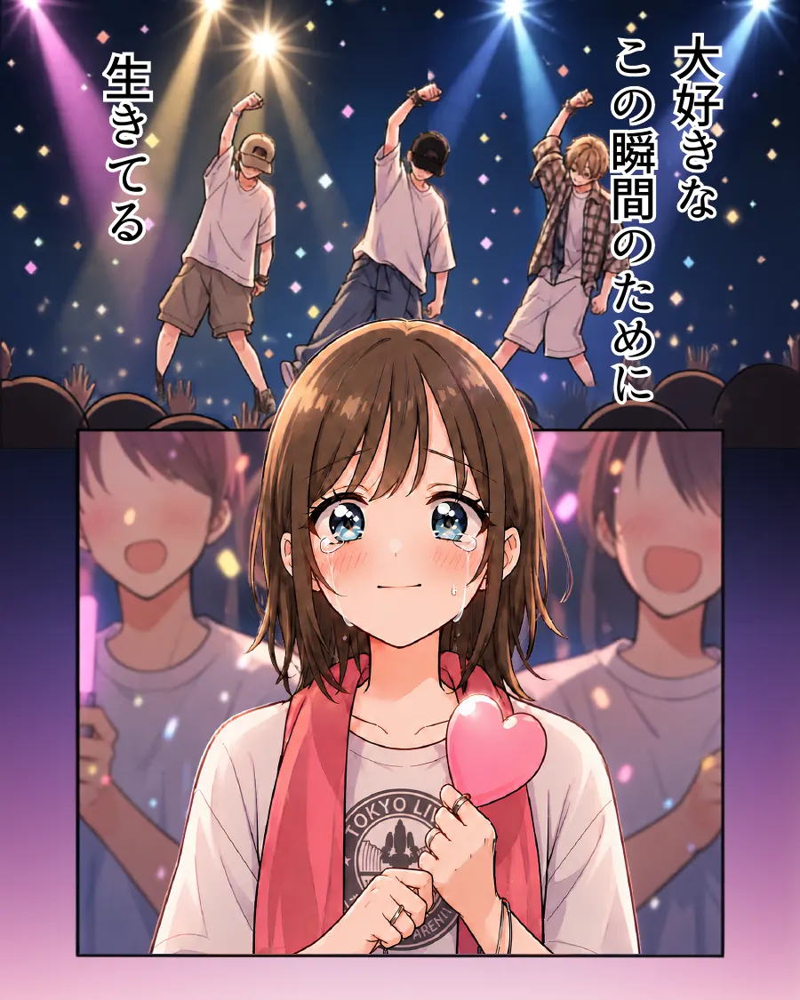
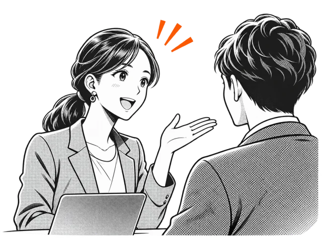
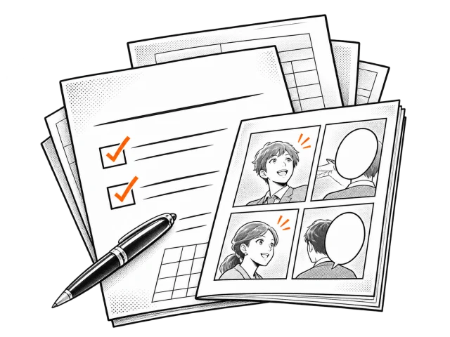
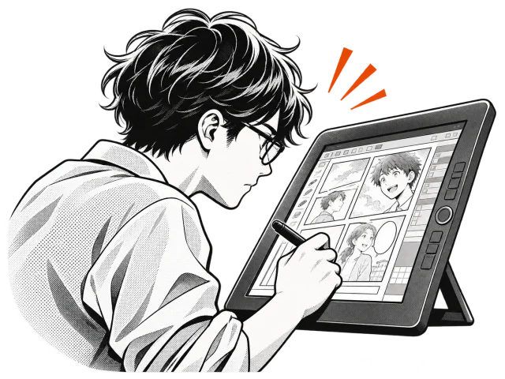

02ANIME
ビズアニメ
03VIDEO
ビズ動画
大手企業からスタートアップまで、幅広くご支援
02PROBLEMS
こんなお悩みはありませんか？
商品・サービスの
魅力が、 うまく伝わらない マンガアニメ動画
専門的な内容を、
分かりやすく 説明できない マンガ
Webサイトや
広告が、 印象に残らない アニメ動画
採用で、
会社の雰囲気や 仕事の魅力が 伝わらない マンガ動画
営業資料だけでは、
納得して もらいにくい マンガ
理念や
ブランドの想いが、 広がらない マンガアニメ動画
研修や
マニュアルの 内容が、 定着しにくい マンガ動画
どれが合うか
まずは相談する分からなくても
物語にすると、
03SERVICES
伝える相手に合わせて、
3つの表現から。


04EFFECTS OF MANGA
マンガにすると、何が変わるのか。
RECRUITING
採用のマンガ
業種エンターテインメント（芸能プロダクション）
PURPOSE｜制作の目的
総合職の採用に向けた、採用マンガ（9ページ）
CAN DO｜できるようになること
求職者が、
マンガだから伝わること
- 仕事の現場と空気を、場面で見せられる
- 読み手が自分を重ねて読める
- 物語で、最後まで読み進められる
SERVICE
サービス説明のマンガ
業種IT（クラウドサービス）
PURPOSE｜制作の目的
収益管理サービス（AIサービス編）の内容と、導入後の変化を伝えるマンガ（8ページ）
CAN DO｜できるようになること
検討中の人が、
「管理できるか分からないからやらない」じゃなくて「管理できるからやってみよう」と言えるようになっていた
マンガだから伝わること
- 導入前の悩みから導入後の変化までを、物語で見せられる
- 専門的な内容を、会話で順を追って説明できる
- 数字では伝えにくい変化を描ける
御社の強みが伝わる
05WORKS
制作実績
押すと、その場で読んだり再生したりできます。
※ 掲載作品は、表現の幅をお示しするための作例です。特定企業の受注実績や、実在する商品・ブランドとの関係を示すものではありません。
※ 登場する人物は、AIで生成した架空の人物です。配信時は、掲載先に合わせてAI生成である旨の表示をご案内します。
※ 美容室の採用動画（前編・後編）は構成の作例です。実際の採用動画では、社員ご本人の声や写真を使います。
06WHY BIZ STORY
BIZ STORY が選ばれる理由
-
01
3つのサービス共通
マンガ・アニメ・動画を、
まとめて相談できる どれが合うか決まっていなくても大丈夫です。
-
02
3つのサービス共通
目的と相手に合わせて、
表現を選べる 誰に・何を・どこで伝えるかから、合う表現をご提案します。
-
03
ビズマンガ × ビズアニメ
1つの物語を、
マンガからアニメへ 同じキャラクターと世界観のまま、アニメにできます。
-
04
ビズマンガ
シナリオから
任せられる ヒアリングをもとに、シナリオと構成からご提案します。
-
05
ビズマンガ
審査を通過した作家陣
＋ 専属ディレクター ディレクターが企画の意図を作家へ伝え、原稿の品質を確かめます。
-
06
ビズマンガ
作画は完全オリジナル、
著作権は譲渡 納品時に、全データの著作権・利用権をお渡しします。
07PROCESS
制作の流れ
-
01
お問い合わせ
ご相談フォームから
ご連絡ください。 -
02
ヒアリング
目的の確認伝えたいこと・
相手・ 使う場面を うかがいます。 
-
03
企画・構成
お見積もり表現と構成、
お見積もりを ご提案します。 
-
04
制作
マンガ・
アニメ・ 動画を つくります。 
-
05
ご確認
修正途中で
ご確認いただき、 直します。 -
06
納品
使う場面に
合わせた形で お渡しします。
08FAQ
よくある質問
相談や見積もりだけでも大丈夫ですか？
はい。ご相談・お見積もりは無料です。
1ページの漫画を無料で作ってもらえるのは、どんな内容ですか？
御社の事業の強みを、お客様の課題が解決するまでの流れとして1ページの漫画にしたものです。対象や条件は、お問い合わせのあとにご案内します。
マンガ・アニメ・動画のどれが合うか分からなくても相談できますか？
はい。目的や使う場面をうかがい、合う表現をご提案します。
予算や素材が決まっていなくても相談できますか？
はい。目的と内容をうかがい、ご予算に合わせた進め方をご提案します。
制作期間はどのくらいですか？
内容・ページ数・映像の長さによって異なります。ご希望の時期をうかがい、個別にご案内します。
制作物の著作権や、使える範囲はどうなりますか？
ビズマンガは、納品時に著作権・利用権をお客様へ譲渡します。ビズアニメ・ビズ動画は、ご契約の際に個別にご案内します。
09 CONTACT
伝えたいことを、
伝わるカタチに。
まずは、
- 運営会社
- 合同会社KUROM
- 所在地
- 東京都目黒区目黒2-11-15